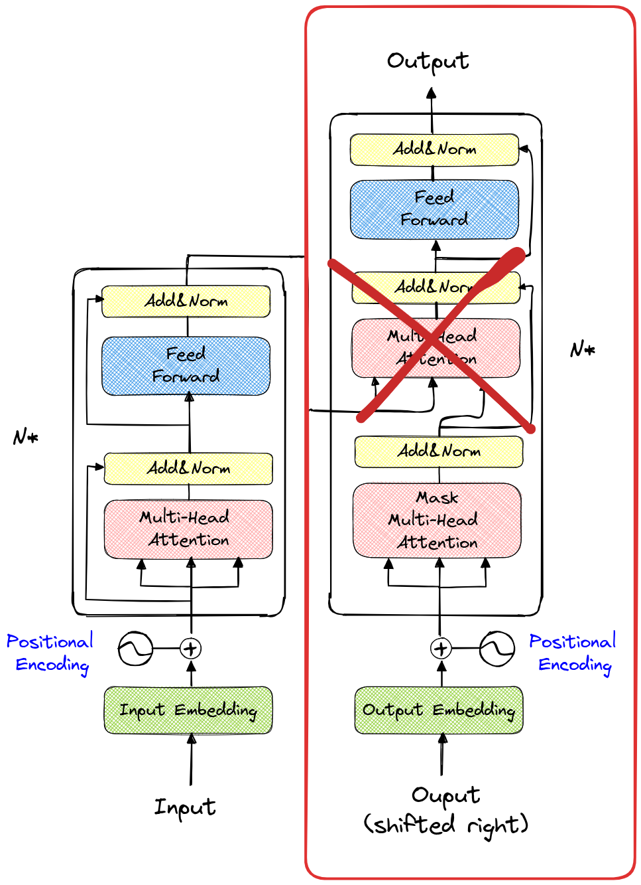

变压器的结构和特性#
到目前为止，我们主要研究了 Transformer 的解码器架构，重点关注了 带掩码的多头自注意力。在本部分中，我们将探讨编码器模块背后的原理以及 多头交叉注意力 的作用。
文本的特殊性#
在介绍编码器模块之前，我们需要理解为何在之前的笔记本中只使用了解码器模块。如下图所示，红色框标记的部分是我们使用的模型结构（不包含第二个 多头注意力 层）。

文本是从左到右阅读的，这也是为何文本生成模型采用相同的方向处理信息。这种模型被称为 自回归模型。模型通过之前的 token（包含在上下文中）来预测下一个 token。
在训练过程中，会使用掩码避免模型“看到”当前 token 之后的 token。
然而，这种方法仅适用于从左到右的文本生成。在许多情况下，自回归方法并非最佳选择。例如，自然语言处理中的翻译或情感分析，以及计算机视觉中的某些应用。目前，Transformer 架构在大多数深度学习领域表现出色，且在许多情况下并非自回归方法。

AR-LLM 指 自回归大语言模型。
编码器块#
编码器模块是架构图左侧的部分（再次用红色框标记）。
与之前使用的模块不同的是，多头注意力 层不使用掩码。类比之前的笔记本，这意味着在计算 注意力 时，我们使用的是一个完整的矩阵，而非下三角矩阵。
实践中，这意味着输入序列中的每个 token 都可以与其他所有 token（无论是之前还是之后的）进行交互。在情感分析等任务中，这是首选方法，因为输入序列已知，且我们只需预测一个标签（如正面、负面或中性）。
关于情感分析的说明：在自然语言处理中，情感分析是指将一段文本输入模型，并让模型判断该文本的情感倾向。例如，对于电影评论，我们希望模型能判断“这部电影烂透了”是负面评价，而“对我来说，这是有史以来最好的电影”是正面评价。
需要注意的关键点：在预测句子的情感倾向时，我们只需将文本通过 Transformer 一次。而在文本生成任务中，每生成一个 token 都需要调用模型一次（即生成 10 个 token 需要调用模型 10 次）。 基于编码器模块的 Transformer 模型除了情感分析外，还有许多应用，如垃圾邮件检测、文档分类、命名实体识别和内容推荐。此外，在图像处理中，我们也会使用一种类似编码器的 Transformer 变体。总结而言，编码器模块非常适合分类任务（包括图像的检测和分割）。
具有交叉注意机制的完整架构#
接下来，我们需要理解完整架构的作用。需要注意的是，Transformer 首次被提出是在论文 “Attention Is All You Need” 中，该论文主要探讨的是 机器翻译。
在理解架构的工作原理之前，我们先分析翻译问题。在翻译任务中，我们有一段源语言的文本，并希望生成同一段文本的目标语言版本。因此，该任务既包含生成部分（即解码器），也包含对可用信息的编码部分。
可以想象，解码器生成 token 时，既依赖于之前生成的 token，又通过 交叉注意力 层查询编码后的信息。
数学形式化#
Transformer 的 编码器 接收源序列 \(x\)，并为序列中的每个 token 生成上下文表示： \(E = \text{Encoder}(x)\) 其中，\(E\) 是源序列 \(x\) 的上下文表示矩阵。\(E\) 的每一行对应 token \(x_i\) 的上下文表示 \(e_i\)。
Transformer 的 解码器 接收编码器的上下文表示 \(E\)，并生成目标序列 \(y\)。在每一步生成中，解码器根据之前生成的 token 以及通过 交叉注意力 层查询编码器，生成新的 token \(y_t\)： \(y_t = \text{Decoder}(y_{<t}, E)\) 其中，\(y_{<t}\) 表示之前生成的 token 直到步骤 \(t-1\)。生成过程同时使用 自注意力（捕获目标序列中的顺序依赖关系）和 交叉注意力（将编码器的信息 \(E\) 纳入其中）。
交叉注意力 允许解码器查询编码器的上下文表示 \(E\)，以便在生成每个 token \(y_t\) 时获取相关信息。其计算方式如下： \( \text{Cross-Attention}(Q, K, V) = \text{softmax}\left(\frac{QK^T}{\sqrt{d_k}}\right) V \) 其中，\(Q\)（查询）是解码器之前生成的 token 的嵌入，\(K\)（键）和 \(V\)（值）是编码器 \(E\) 的嵌入，\(d_k\) 是 \(K\) 嵌入的维度，用于归一化。
通过结合这些元素，Transformer 模型能够利用注意力机制和 位置嵌入，有效地将源语言的 token 序列翻译为目标语言，同时保持顺序并捕获长期依赖关系。
说明：解码器模型尝试根据编码器的 token 生成相关的 token。它会发出一个 查询（query），并通过 交叉注意力 层查看编码器传递的 键（key）和 值（value）。接下来，它会发出一个查询、键和值，以通过 自注意力 层找到与之前生成的 token 保持一致的 token。
使用示例#
完整架构适用于从一段文本生成另一段文本的场景。常见的应用包括：翻译、文本摘要、自动校正和引导式文本生成。
说明：您可能已经发现 ChatGPT 能够进行翻译和文本摘要。实际上，该模型非常强大，能够完成理论上对它来说具有挑战性的任务。它被训练用于预测下一个 token，稍加思考便可发现，预测下一个 token 的任务实际上能够覆盖所有自然语言处理任务。 然而，对于规模较小的模型，最好选择适合具体问题的架构。